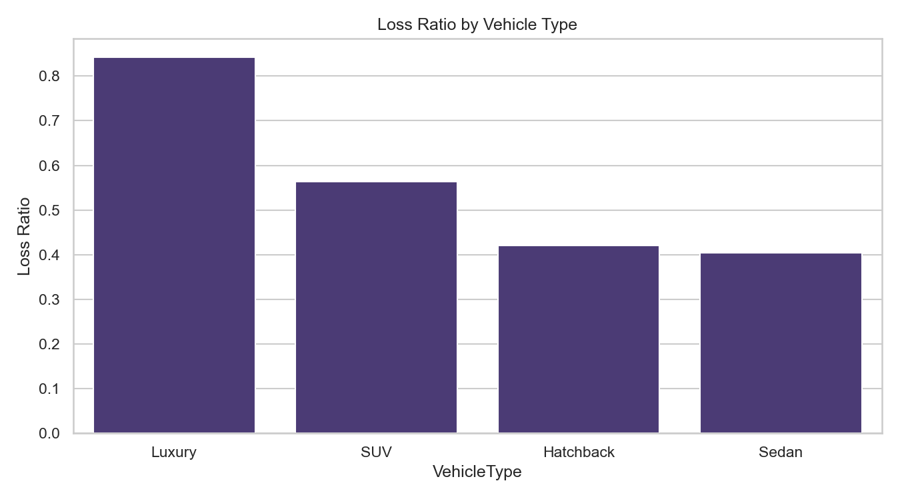
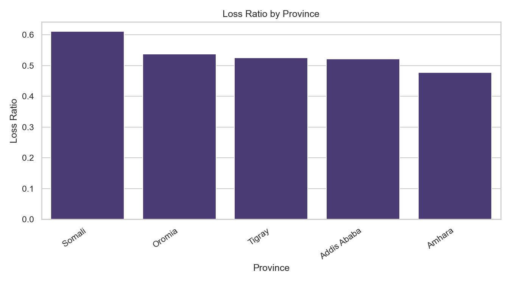
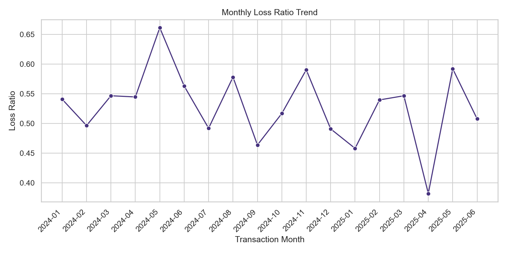
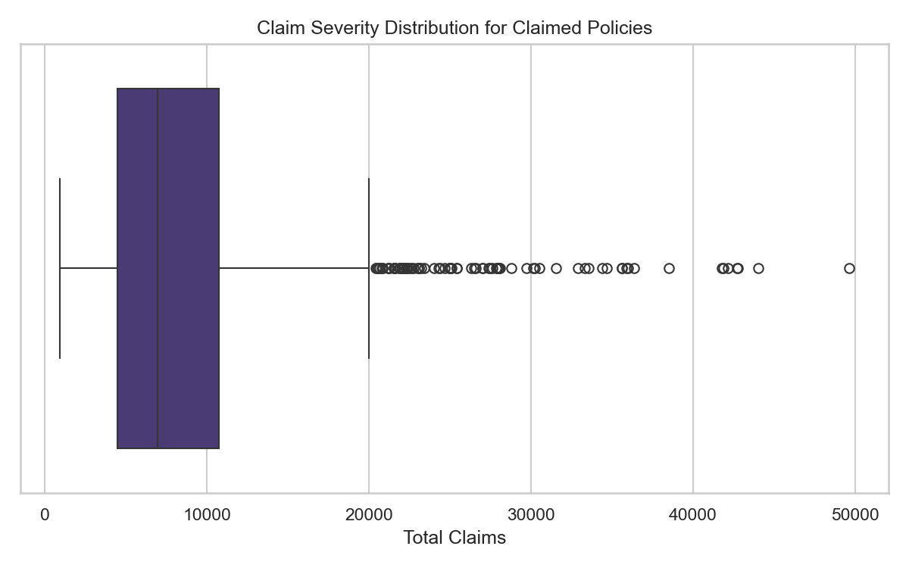
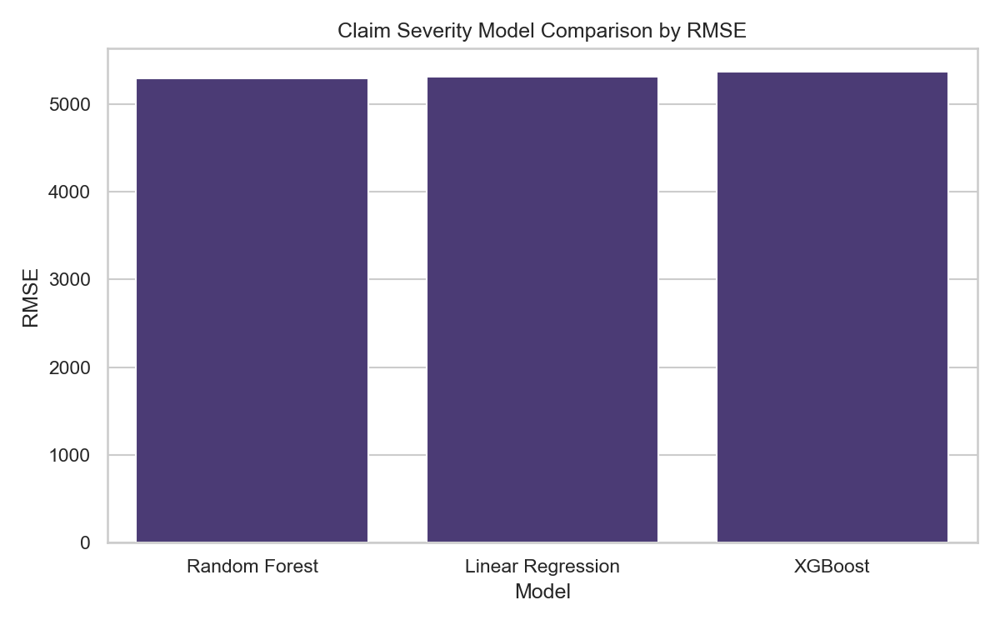
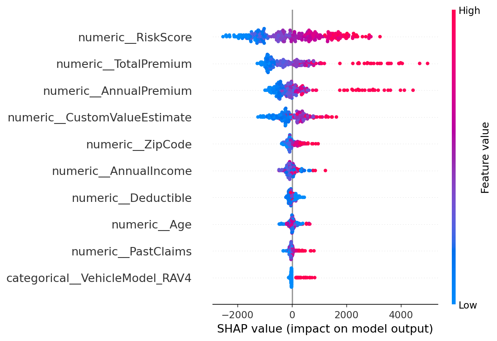

A full-stack analytics project turning 10,000 motor-insurance policies into evidence-backed pricing, underwriting, and marketing recommendations — from exploratory analysis to statistical testing, ML modeling, and SHAP interpretability.
AlphaCare Insurance Solutions (ACIS) needed to identify high- and low-risk segments across geography, demographics, and vehicle types — and translate those patterns into actionable pricing decisions backed by statistics and machine learning.
Loss ratio, margin, and claim-rate KPIs across provinces, vehicles, and gender.
Chi-square, Welch's t-test, and two-proportion z-tests at α = 0.05.
Claim severity (regression) and claim frequency (classification) with 3 algorithms.
Pure premium = P(claim) × predicted severity, with technical premium loadings.
Built with DVC for data versioning, modular Python utilities in src/,
Jupyter notebooks for analysis, pytest + Ruff CI, and exportable business reports.
Vehicle type is the strongest risk signal. Luxury vehicles carry an 84.24% loss ratio — nearly double sedans and hatchbacks. Geographic differences exist but require statistical validation before pricing action.
| Vehicle Type | Policies | Loss Ratio | Margin | Signal |
|---|---|---|---|---|
| Luxury | 972 | 84.24% | 667,632 | High risk |
| SUV | 3,000 | 56.37% | 3,165,771 | Moderate |
| Hatchback | 2,036 | 42.02% | 2,627,899 | Lower risk |
| Sedan | 3,992 | 40.40% | 5,278,092 | Lower risk |




Five formal tests at a 5% significance level. None were rejected — descriptive EDA patterns are worth monitoring but not statistically strong enough for immediate segment-level pricing changes on their own.
| Hypothesis | Test | P-value | Decision |
|---|---|---|---|
| Claim occurrence differs across provinces | Chi-square | 0.0761 | Do not reject |
| Claim occurrence differs by gender | Chi-square | 0.9638 | Do not reject |
| Claim rate: Addis Ababa vs Oromia | Two-proportion z-test | 0.7859 | Do not reject |
| Margin: zip codes 10004 vs 10002 | Welch's t-test | 0.2642 | Do not reject |
| Margin: Female vs Male | Welch's t-test | 0.9847 | Do not reject |
Claim severity and frequency were modeled separately. Random Forest achieved the best severity performance (RMSE 5,292 · R² 0.208). SHAP analysis identified RiskScore, TotalPremium, and CustomValueEstimate as top drivers.
Best model R² = 0.208 — useful for exploration, not production automation.
Pure Premium = P(claim) × Predicted Severity
Technical Premium = Pure Premium
+ Expense Loading
+ Risk Load
+ Profit Margin
Frequency model: Random Forest classifier · ROC-AUC 0.79


Five evidence-backed actions for ACIS leadership and underwriting teams.
Notebooks, source code, test suite, DVC pipeline, and detailed reports are all available in the GitHub repository.